Scene Loaderは非同期ロード、進捗、複数シーン、優先度によるActive Scene切り替えをまとめて扱います。
| 項目 | 内容 |
|---|---|
| namespace | SymphonyFrameWork.System.SceneLoad |
| 主な公開型 | SceneLoader / SceneLoadRequest / SceneLoadInfo / IInitializeAsync |
| 補足 | IInitializeAsync は 5.0.0 で SymphonyFrameWork からこのnamespaceへ移りました |
| メニューパス | Window > SymphonyFrameWork > Symphony Administrator の Scene Load パネル |
| 設定の保存先 | Assets/Resources/SymphonyFrameWork/SceneLoadConfig.asset |
対象シーンをBuild Settingsへ追加してから、名前を指定してロードします。
using System;
using SymphonyFrameWork.System.SceneLoad;
using UnityEngine;
using UnityEngine.SceneManagement;
public async void OpenGameScene()
{
var request = new SceneLoadRequest("Game", priority: 10);
IProgress<float> progress = new Progress<float>(
value => Debug.Log($"Loading: {value:P0}"));
bool succeeded = await SceneLoader.LoadSceneAsync(
request,
progress,
mode: LoadSceneMode.Additive,
token: destroyCancellationToken);
if (succeeded)
{
SceneLoader.SetActiveScene("Game");
}
}SceneLoadRequestはシーン名とActive Scene選択用の優先度を1つの値として扱います。複数シーンではSceneLoadRequest[]をLoadScenesAsyncへ渡せるため、シーン名と優先度の対応を崩しません。進捗の推奨契約はIProgress<float>です。既存のシーン名とAction<float>を使うoverloadも互換性のため利用できます。
追跡中の全シーンは、変更不能なSceneLoadInfoのスナップショットとして取得できます。取得後にロード状態が変わっても、既に取得した値は変化しません。
foreach (SceneLoadInfo sceneInfo in SceneLoader.GetSceneInfos())
{
Debug.Log(
$"{sceneInfo.SceneName}: {sceneInfo.State}, "
+ $"Priority={sceneInfo.Priority}, Progress={sceneInfo.Progress:P0}, "
+ $"Active={sceneInfo.IsActive}");
}
if (SceneLoader.TryGetSceneInfo("Game", out SceneLoadInfo gameScene))
{
Debug.Log($"Game scene progress: {gameScene.Progress:P0}");
}ルートGameObjectがIInjectable<T...>やIInitializeAsyncを実装している場合は、注入と初期化の完了も待機します。
SceneLoaderを使う。SceneManager.LoadSceneを直接使うと、優先度管理、依存注入、IInitializeAsyncが働かない。LoadSceneMode.Singleは対象をAdditiveでロードした後、他の追跡シーンをアンロードする。現在のシーンを残す場合はAdditiveを使う。IInitializeAsyncの失敗はSceneInitializationException。Build Settings未登録など通常のロード失敗はfalseで返る。SceneLoader.GetSceneInfos()を使う。既知のScene名だけを調べる場合はTryGetSceneInfoを使い、戻るSceneLoadInfoを取得時点のスナップショットとして扱う。入口: Window > SymphonyFrameWork > Symphony Administrator
| パネル | 内容 |
|---|---|
| Scene Load | ロード済みシーンと進行中のロード |
Main Toolbar の Symphony Framework > Scene Init | 次回のPlay Mode開始時に初期シーン処理を実行するか切り替える |
Scene Load パネルはPlay Mode中のみ内容を持ちます。Edit Modeでは未接続状態を表示します。
Scene Init はUnity 6000.3以降で使用できます。メインツールバー右側の音符アイコン付きSymphony Frameworkプルダウンから選びます。変更はAssets/Resources/SymphonyFrameWork/SceneLoadConfig.assetへ保存され、Inspectorの「エディタでの再生時にシーンをリセットしてロードを実行するか」と同じ設定へ反映されます。Play Mode開始後の変更は実行中のシーンを切り替えず、次のPlay Mode開始から反映されます。
Scene Loadの内部では、Commandと読み取りを分離しています。

SceneLoadQueryだけがRegistry／Entityを読み取り、利用側にはSceneLoadInfo、Viewには内部Dtoを返します。SceneLoadWindowはViewModelを購読し、RuntimeのRegistryやEntityを直接参照しません。
この文書は Assets/SymphonyFrameWork/Documentation~/Modules/SceneLoader.md から生成しています。編集は正本のMarkdownへ行ってください。